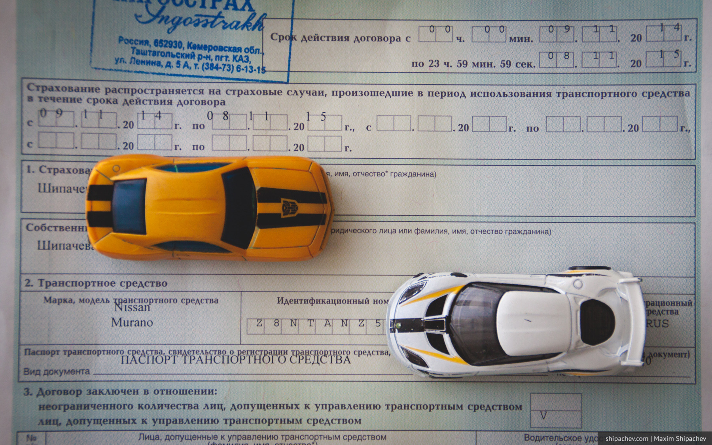

Минимум раз в год, каждый владелец автомобиля задаётся вопросом «Где купить ОСАГО дешевле?». И, как правило, не получает ответа на этот вопрос. Стоимость ОСАГО на практике во всех страховых одинакова.
История обязательного страхования гражданской отвественности в России насчитывает чуть больше десятка лет. Закон был принят в 2002 году, начал действовать с 1 июля 2003 года. Вначале многие вздохнули с облегчением — прошли времена, когда после ДТП приходилось продавать квартиру. В обмен на 2-3 тысячи рублей граждане получили спокойствие. Правда, есть и другая точка зрения — мол, не ощущая финансовой ответственности, водители стали небрежно относиться к соблюдению ПДД.
Теоретически можно найти ОСАГО дешевле. Предельный размер тарифа ежегодно определяет Центральный Банк России. Страховым компаниям не запрещается давать свои скидки.
С годами ОСАГО стало обрастать мутными схемами, с поддельными справками о ДТП, с инсценированными ДТП. Когда двое, вступив в сговор, получали от страховой необоснованные выплаты. Страховые ужесточали регламенты, мошенники придумывали новые способы. Не стеснялись отстаивать свои права и законопослушные граждане.

Доля выплат страховыми под данному виду страхования стала расти. Небольшое снижение было в 2011 году, когда после принятия Постановления Правительства России от № 574 для ряда автовладельцев были увеличены тарифы. Но потом доля вновь начала расти. Прибыль снизилась. С учётом оперативных расходов страховых компаний, этот вид страхования становился убыточным.
Динамика сборов и выплат по ОСАГО в России данные портала «Страхование сегодня»
| Год | Поступления | Выплаты | Коэфф. выплат % | ||
| Поступления (тыс.руб) | % от показателя предыдущего года | Выплаты (тыс.руб) | % от показателя предыдущего года | ||
| 2014 | 150 917 830 | 112.42 | 90 306 430 | 116.71 | 59.84 |
| 2013 | 134 248 054 | 110.76 | 77 374 829 | 121.05 | 57.64 |
| 2012 | 121 211 464 | 117.19 | 63 922 243 | 113.63 | 52.74 |
| 2011 | 103 432 048 | 112.85 | 56 256 982 | 101.30 | 54.39 |
| 2010 | 91 656 725 | 106.91 | 55 532 376 | 111.40 | 60.59 |
| 2009 | 85 736 320 | 107.23 | 49 848 348 | 104.71 | 58.14 |
| 2008 | 79 953 220 | 113.58 | 47 605 913 | 118.73 | 59.54 |
| 2007 | 70 390 992 | 110.21 | 40 094 643 | 120.44 | 56.96 |
| 2006 | 63 869 340 | 118.88 | 33 289 723 | 120.85 | 52.12 |
| 2005 | 53 724 753 | 109.13 | 27 546 790 | 143.47 | 51.27 |
| 2004 | 49 228 606 | 0.00 | 19 199 744 | 0.00 | 39.00 |
Поступления (тыс. руб.)
Выплаты (тыс. руб.)
Коэффициент выплат (%)
Интегральный коэффициент выплат (%)
Интегральный коэффициент выплат для каждого периода (квартала) – это процентное отношение суммы всех произведенных выплат с момента начала отображения статистики на портале «Страхование сегодня» (второй квартал 2004 года) по данный период включительно к суммарным страховым премиям в том же временном диапазоне. Позволяет грубо оценивать развитие убыточности во времени.
Ещё хуже для страховых компаний выглядела ситуация с выплатами в Кемеровской области. Государственное регулирование тарифов на этот вид страхования и низкая стоимость привела к тому, что страховые компании, стремясь компенсировать свои убытки, были вынуждены фактически навязывать страховщику дополнительные услуги в виде страхования жизни, имущества и здоровья. Если клиент проявлял знание законов, то можно было, конечно, избежать дополнительных трат. Правда, тогда страховая ссылалась на регламент. По регламенту, к примеру, автомобиль должен быть осмотрен сотрудником компании. Осмотр — по записи, запись —через два месяца. Вам какой день удобнее?
Оригинально поступила компания Ингосстрах. Филиал был попросту вывезен из Кемерова в пгт. Каз Таштагольского района Кемеровской области.
Динамика сборов и выплат по ОСАГО в Кемеровской области
| Год | Поступления | Выплаты | Коэфф. выплат % | ||
| Поступления (тыс.руб) | % от показателя предыдущего года | Выплаты (тыс.руб) | % от показателя предыдущего года | ||
| 2014 | 2 430 335 | 109.10 | 1 457 067 | 98.55 | 59.95 |
| 2013 | 2 227 648 | 106.78 | 1 478 568 | 129.13 | 66.37 |
| 2012 | 2 086 263 | 118.03 | 1 145 048 | 110.68 | 54.89 |
| 2011 | 1 767 616 | 124.71 | 1 034 530 | 115.38 | 58.53 |
| 2010 | 1 417 400 | 105.15 | 896 615 | 99.38 | 63.26 |
| 2009 | 1 347 943 | 113.34 | 902 203 | 94.47 | 66.93 |
| 2008 | 1 189 306 | 106.80 | 954 996 | 111.62 | 80.30 |
| 2007 | 1 113 589 | 112.06 | 855 569 | 121.28 | 76.83 |
| 2006 | 993 743 | 117.04 | 705 422 | 127.39 | 70.99 |
| 2005 | 849 044 | 112.39 | 553 746 | 141.67 | 65.22 |
| 2004 | 755 452 | 0.00 | 390 881 | 0.00 | 51.74 |
Система страхования была значительно реформирована в 2014 году. Для страхования теперь необходимо прохождение технического осмотра, история автомобиля хранится в единой базе данных и при оформлении полиса обязательно проверяют историю ДТП.
Значительно были увеличены и выплаты. Размер компенсационной выплаты по возмещению вреда, который был нанесен имуществу каждого потерпевшего теперь составляет 400 тыс. рублей (вместо 120 тыс. руб. в прошлом законе). Нанесения вреда жизни и здоровью каждого потерпевшего теперь компенсируют в размере до 500 тыс. рублей (раньше до 160).
Несмотря на ежегодный рост тарифов, их устанавливает Банк России, ситуация с ОСАГО продолжает оставаться напряжённой как для страховых компаний, так и для автомобилистов.
Очередной проблемой, особенно после роста тарифов, стала продажа недействительных полисов. На рынок такие полисы попадают после отзыва у страховых компаний лицензий. Такой полис ОСАГО, по сути, не является поддельным.
По разным данным сейчас на рынке от 1 до 2 миллионов недействительных полисов. Говорят, купить «поддельный» полис ОСАГО можно за 500-1000 рублей.
Сотрудники ГИБДД не имеют технической возможности проверить действительность полиса. Но, в случае ДТП с экономным автомобилистом, разбираться с ним придётся уже не в страховой компании, а в суде. Хорошо бы, если ему было чем заплатить за ущерб. Привет 90-е.
Как сделать, чтобы ОСАГО стоило дешевле?
С 1 июля 2014 года это стало возможным с введением так называемого коэффициента «бонус-малус» (КБМ) – коэффициент, влияющий на стоимость полиса (повышающий или понижающий в зависимости от аварийности в предыдущие периоды).
Если водитель не допускает аварий по своей вине, то теперь стоимость полиса для него будет ежегодно снижаться. Через 10 лет безаварийной езды он будет платить только половину действующего тарифа.
Порядок применения коэффициента «бонус-малус» данные сайта РСА
| Класс на начало годового срока страхования | Коэффициент | Класс по окончании годового срока страхования с учетом наличия страховых случаев, произошедших в период действия предыдущих договоров обязательного страхования | ||||
| 0 страховых выплат | 1 страховая выплата | 2 страховые выплаты | 3 страховые выплаты | 4 и более страховых выплат | ||
| М | 2,45 | 0 | М | М | М | М |
| 0 | 2,3 | 1 | М | М | М | М |
| 1 | 1,55 | 2 | М | М | М | М |
| 2 | 1,4 | 3 | 1 | М | М | М |
| 3 | 1 | 4 | 1 | М | М | М |
| 4 | 0,95 | 5 | 2 | 1 | М | М |
| 5 | 0,9 | 6 | 3 | 1 | М | М |
| 6 | 0,85 | 7 | 4 | 2 | М | М |
| 7 | 0,8 | 8 | 4 | 2 | М | М |
| 8 | 0,75 | 9 | 5 | 2 | М | М |
| 9 | 0,7 | 10 | 5 | 2 | 1 | М |
| 10 | 0,65 | 11 | 6 | 3 | 1 | М |
| 11 | 0,6 | 12 | 6 | 3 | 1 | М |
| 12 | 0,55 | 13 | 6 | 3 | 1 | М |
| 13 | 0,5 | 13 | 7 | 3 | 1 | М |
В случае нескольких водителей «привязанных» к автомобилю в расчёт берётся история самого «аварийного». Знай кого вписывать теперь в страховой полис. Кстати, с введением данной системы учёта на страхователя накладывается обязательство незамедлительно сообщать в письменной форме страховщику об изменении сведений водителей (изменение фамилии, смена водительского удостоверения)
Несмотря на то, что остаются вопросы, почему фактическим объектом страхования является не водитель, а автотранспортное средство, это значительный шаг к восстановлению справедливости.